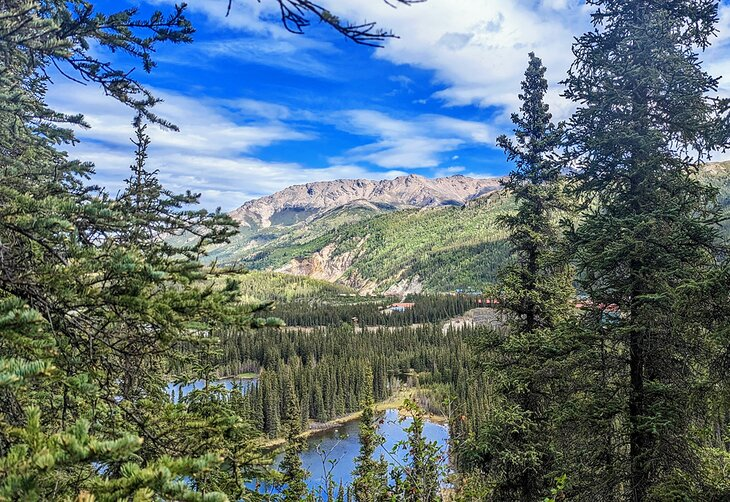

Sources
learn more
Home
Sources
Images

Becca Blond, published in 2023,
Rod Long, published in 2018
____________________________________________________________
Text
Patricia Roppel,Steven Pruitt. last edited: 9. des, 2024. Wikipedia. Alaska
Nordlie, Haavard, Kristiansen, Steinar. last edited 24. february, 2025. Snl. Alaska
Maynard M Miller, Donald Lynch. last edited Oct. 15, 2025. Britannica. Alaska